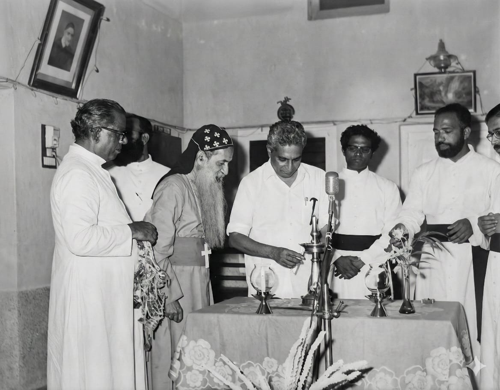
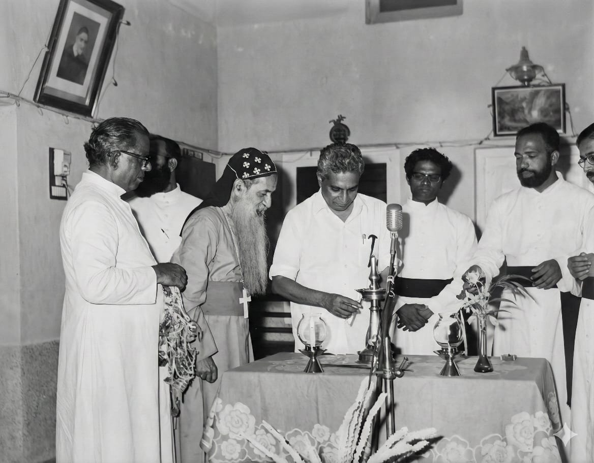
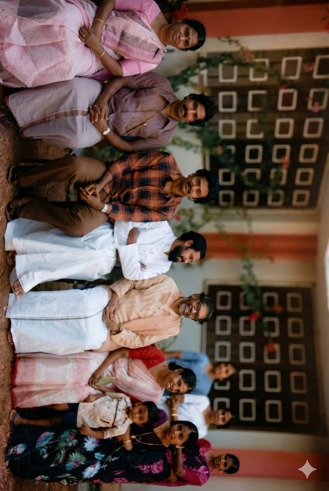
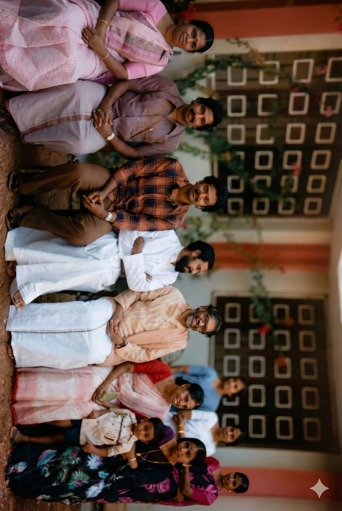
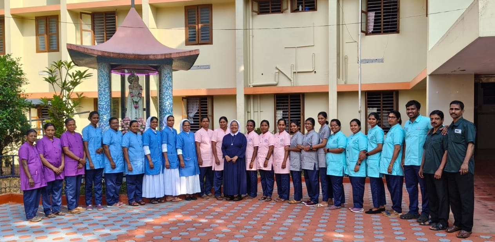
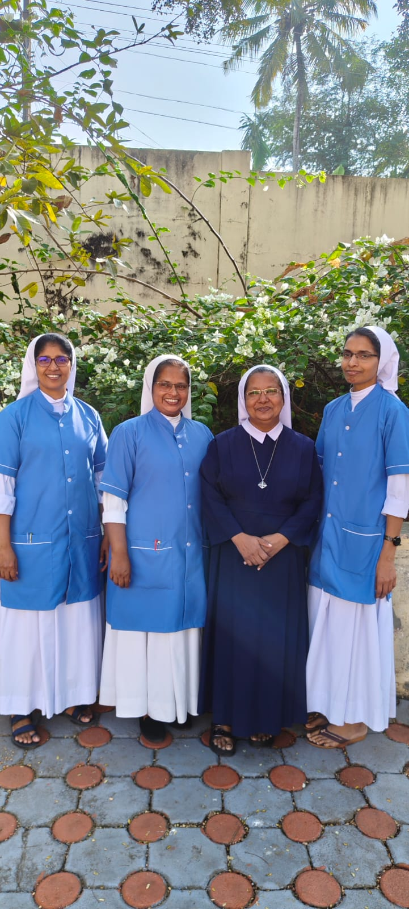
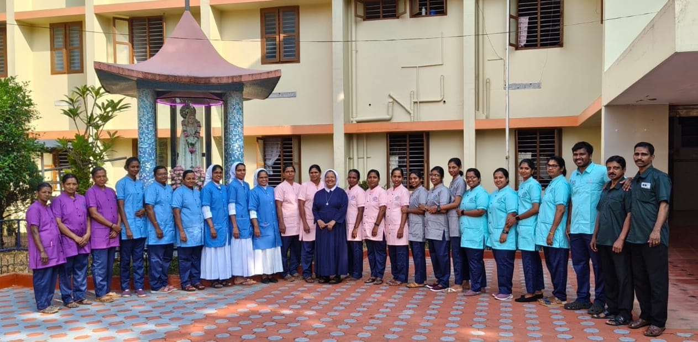
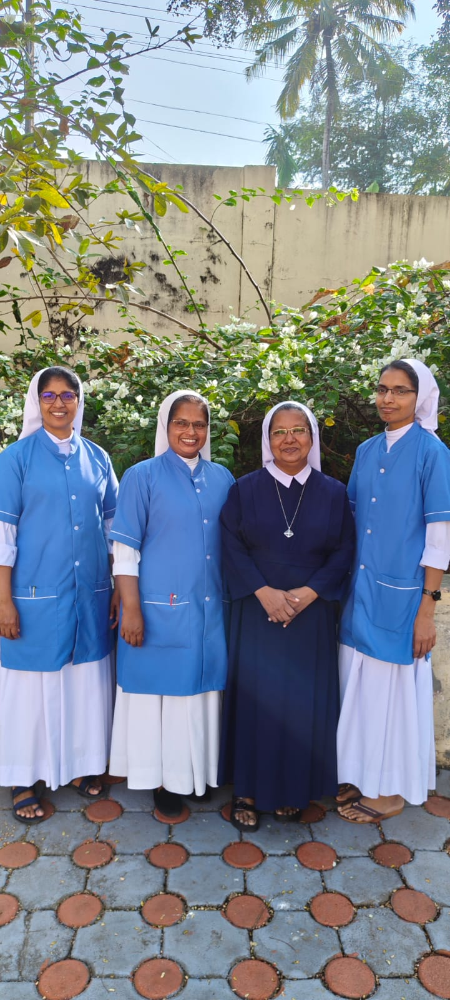

Meet the Team

Sr Jiji Mathew
Hospital Administrator
Dr. Cherian Mathew , MBBS,DPM
Consultant Psychiatrist

Dr.Sunil Kumar K A , MBBS,MD
Consultant Psychiatrist
NABH Entry Level Accredited Hospital
Merciful love Conquers the World
St Vincent’s hospital at thuvayoor is a 40 bedded NABH entry level Hospital. It is situated in a rural area of Pathanamthitta district of South Kerala. The Pioneers (Sisters of charity of St Vincents De Paul SCV) arrived from Germany in 1974.They selected this backward rural village for their service. The hospital started with 16 beds in an emergency base. The general medicine, Genecology, Pediatrics, Surgery and ENT department worked efficiently. St vincents hospital blessed by Rt. Rev. Gregorious Bishop Of Trivandrum and inaugurated by honourable former health minister Chittaranjan on 2nd May 1978. The psychiatry department was started in 1980 because there was no access to treatment for mental illness in this area and to prioritize the needs of the people. The first floor was built in 1984 due to the increasing number of in-patients and the shortage of space. During the corona pandemic departments except general medicine and psychiatry had to be closed. The hospital is providing in-patients facility and outpatient consultation for the psychiatric patients. It has a rich pool of qualified, skilled and dedicated team of medical, paramedical and nursing personnel whose motto is “ Merciful love conquers the world “. Most specialized treatment is provided to the psychiatric patients especially thoser healing from the lower and middle income families at affordable rates. Through the years 1978 – St Vincents Hospital at Thuvayoor inaugurated 1980 – Psychiatry department started as per the demand of the people 2017 -Registered under Kerala State Mental Health Authority 2024 2023 - Celebrated Silver Jubilee of the hospital 2023 – Registered as Charitable trust 2024 – Accredited by NABH (Entry level) .
To provide quality health care to the sick and suffering with compassionate love.
Care and cure .
At St. Vincents Hospital, we are committed to:
Our 24/7 emergency casualty department is equipped to handle medical emergencies with prompt and efficient care. Our trained staff and emergency physicians are always ready to provide immediate medical attention to patients in critical conditions, ensuring stabilization and appropriate treatment.
Our Physician Outpatient Department offers comprehensive general medical consultations and treatment. Our experienced physicians provide diagnosis, treatment, and management of various medical conditions, preventive care, and health check-ups in a comfortable outpatient setting.
Specialized psychiatric outpatient services are available for individuals dealing with mental health concerns. Our qualified psychiatrists provide compassionate care, diagnosis, and treatment for various psychiatric conditions including depression, anxiety, schizophrenia, and other mental health disorders. We ensure a supportive and confidential environment for all our patients.
Well-stocked in-house pharmacy providing all essential medicines and medical supplies.
Modern diagnostic laboratory equipped with advanced equipment for accurate and timely test results.
Digital X-ray facility for quick and precise diagnostic imaging services.
Professional counselling services to support mental health and emotional well-being.
Hygienic canteen serving nutritious meals for patients, visitors, and staff.
Well-maintained library with medical literature and resources for learning and research.
Comprehensive internship training programs for nursing, MSW, and psychology students with hostel facilities available.
Electrocardiogram (ECG) facility for cardiac monitoring and diagnosis.
We provide compassionate and quality healthcare to all our patients, treating each individual with the care and attention they deserve.
We believe in including family members in the treatment process, recognizing their important role in patient recovery and well-being.
Every patient is considered equal at St. Vincent Hospital, regardless of their background, and is treated with respect and courtesy.
We maintain the highest standards of medical care, ensuring that our patients receive evidence-based treatment and professional services.
Hospital Administrator
Consultant Psychiatrist
Consultant Psychiatrist


 

 



 




St. Vincent Hospital
Thuvayoor
St. Vincent's Hospital Thuvayoor , Kadampanad P.O. PATHANAMTHITTA DIST Pin : 691552
04734 - 282022 , +91 82898 43912, Administrator: 9495437591
scvthuvayoor@gmail.com
We are located in Thuvayoor. Feel free to visit us during visiting hours or call ahead for appointments.